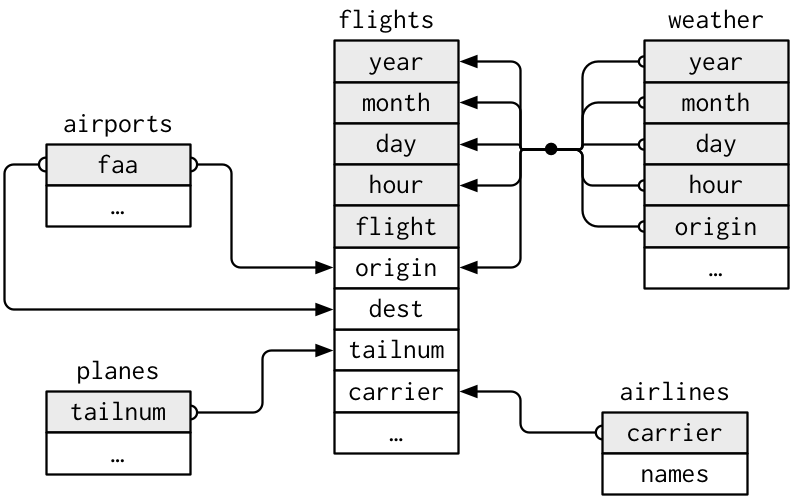
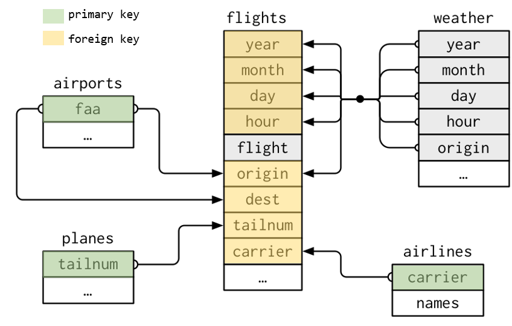
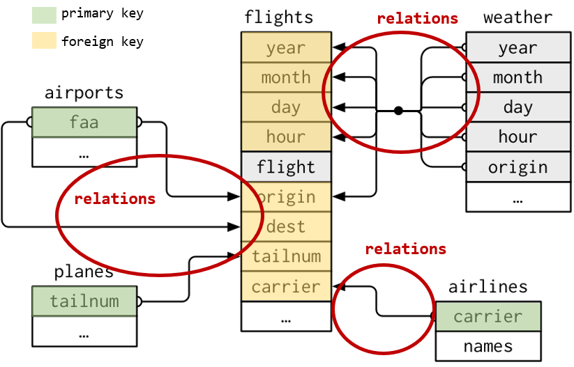

This unit is mostly based on R for Data Science, Wickham and Grolemund (2016)
Data Wrangling
Objective: Make data ready for their future exploration and modelling
We need to convert raw data into processed data
Raw Data
Data as it appears on the source origin.
Any manipulation has been done to them.
Processed Data
Each variable in a column.
Each observation in a raw.
Each observational unit is a cell.
More complex data, interconnected tables.
Data Wrangling
Importing the data
Organizing the data
Transforming the data
Requisites: tidyverse
The tidyverse ecosystem for data analysis
Organizing Data
Organizing Data
We will learn how to organize data in R. Mainly focused on tabular data.
As we have seen we will continue using the tidyverse ecosystem, in this case we will introduce tidyr a package designed for organizing data structure as desired.
library(tidyverse) # Use library(tidyr) for this package only
Mutliple structures for the same data
The same data can be represented in different ways. Here are 4 ways of representing information regarding: country, year, population, cases
1 Table with all in columns
# A tibble: 6 × 4
country year cases population
<chr> <dbl> <dbl> <dbl>
1 Afghanistan 1999 745 19987071
2 Afghanistan 2000 2666 20595360
3 Brazil 1999 37737 172006362
4 Brazil 2000 80488 174504898
5 China 1999 212258 1272915272
6 China 2000 213766 1280428583
1 Table with duplicates per concept
# A tibble: 12 × 4
country year type count
<chr> <dbl> <chr> <dbl>
1 Afghanistan 1999 cases 745
2 Afghanistan 1999 population 19987071
3 Afghanistan 2000 cases 2666
4 Afghanistan 2000 population 20595360
5 Brazil 1999 cases 37737
6 Brazil 1999 population 172006362
7 Brazil 2000 cases 80488
8 Brazil 2000 population 174504898
9 China 1999 cases 212258
10 China 1999 population 1272915272
11 China 2000 cases 213766
12 China 2000 population 1280428583
Mutliple structures for the same data
The same data can be represented in different ways. Here are 4 ways of representing information regarding: country, year, population, cases
1 Table with a combined column
# A tibble: 6 × 3
country year rate
<chr> <dbl> <chr>
1 Afghanistan 1999 745/19987071
2 Afghanistan 2000 2666/20595360
3 Brazil 1999 37737/172006362
4 Brazil 2000 80488/174504898
5 China 1999 212258/1272915272
6 China 2000 213766/1280428583
2 Tables for each concept
# A tibble: 3 × 3
country `1999` `2000`
<chr> <dbl> <dbl>
1 Afghanistan 745 2666
2 Brazil 37737 80488
3 China 212258 213766
# A tibble: 3 × 3
country `1999` `2000`
<chr> <dbl> <dbl>
1 Afghanistan 19987071 20595360
2 Brazil 172006362 174504898
3 China 1272915272 1280428583
Mutliple structures for the same data
From the last example only one is fully organized as desired following conventions.
An organized data set will be the one that:
Each variable belongs to one single column
Each row is an observation
Each cell has a single value.
Following this definition, the first example is the organized one.
Pivoting data
Pivoting Data
Normally, the data we receive is not properly organized. So the first, step is to identify the variables and observations.
Once identified, we will need to solve one of these problems:
A variable is disperse in several columns.
An observation is disperse in multiple rows.
This can be resolved using pivot_longer() or pivot_wider()
pivot_longer()
The same variable is organized in different columns:
# A tibble: 3 × 3
country `1999` `2000`
<chr> <dbl> <dbl>
1 Afghanistan 745 2666
2 Brazil 37737 80488
3 China 212258 213766
We will need to pivot this columns a new pair of variables. We need to know:
The columns to pivot.
The name of the variable that will receive the column names. year in this case.
The name of the variable that will receive the values. cases in this case.
pivot_longer()
table4a %>%pivot_longer(cols =c(`1999`, `2000`), # columns to pivotnames_to ="year", # variable to host colnamesvalues_to ="cases"# variable to host values )
# A tibble: 6 × 3
country year cases
<chr> <chr> <dbl>
1 Afghanistan 1999 745
2 Afghanistan 2000 2666
3 Brazil 1999 37737
4 Brazil 2000 80488
5 China 1999 212258
6 China 2000 213766
Take into account we use (`) symbol in the name of the columns because they have a number as name.
pivot_wider()
The same observation is organized in several rows. In this example each observation shows each country each year. You see each observation takes two rows…
# A tibble: 12 × 4
country year type count
<chr> <dbl> <chr> <dbl>
1 Afghanistan 1999 cases 745
2 Afghanistan 1999 population 19987071
3 Afghanistan 2000 cases 2666
4 Afghanistan 2000 population 20595360
5 Brazil 1999 cases 37737
6 Brazil 1999 population 172006362
7 Brazil 2000 cases 80488
8 Brazil 2000 population 174504898
9 China 1999 cases 212258
10 China 1999 population 1272915272
11 China 2000 cases 213766
12 China 2000 population 1280428583
pivot_wider()
We will need to organize the data showing only one row per observation. For doing that we need…
The column where we will extract the names for the new variables. type in this case.
The column where we will extract the valus for each variable. count in this case.
pivot_wider()
table2 %>%pivot_wider(names_from = type, # origin column with variablesvalues_from = count # origin column with values )
# A tibble: 6 × 4
country year cases population
<chr> <dbl> <dbl> <dbl>
1 Afghanistan 1999 745 19987071
2 Afghanistan 2000 2666 20595360
3 Brazil 1999 37737 172006362
4 Brazil 2000 80488 174504898
5 China 1999 212258 1272915272
6 China 2000 213766 1280428583
Pivoting Data
To Sum Up
pivot_longer() will eliminate columns and create rows, makes data more large.
pivot_wider() will eliminate rows and create columns, makes data more wide.
Arranging Columns
Separate and concat columns
We can found situations when a column contains information related to two or more variables.
# A tibble: 6 × 3
country year rate
<chr> <dbl> <chr>
1 Afghanistan 1999 745/19987071
2 Afghanistan 2000 2666/20595360
3 Brazil 1999 37737/172006362
4 Brazil 2000 80488/174504898
5 China 1999 212258/1272915272
6 China 2000 213766/1280428583
We can use separate() to divide one column in two.
Separate and concat columns
table3 %>%separate(rate, into =c("cases", "population"))
# A tibble: 6 × 4
country year cases population
<chr> <dbl> <chr> <chr>
1 Afghanistan 1999 745 19987071
2 Afghanistan 2000 2666 20595360
3 Brazil 1999 37737 172006362
4 Brazil 2000 80488 174504898
5 China 1999 212258 1272915272
6 China 2000 213766 1280428583
Separate and concat columns
By default it makes the separation when finds a non-alphanumeric value. But you can specify the character to use.
table3 %>%separate(rate, into =c("cases", "population"),sep ="/")
# A tibble: 6 × 4
country year cases population
<chr> <dbl> <chr> <chr>
1 Afghanistan 1999 745 19987071
2 Afghanistan 2000 2666 20595360
3 Brazil 1999 37737 172006362
4 Brazil 2000 80488 174504898
5 China 1999 212258 1272915272
6 China 2000 213766 1280428583
You can do it with integer values too as position to make separation.
table5x <- table3 %>%separate(year, into =c("century", "year"),sep =2# make separation after 2 characters )
Separate and concat columns
It is convenient to convert the value, otherwise the new columns will be Strings.
table3 %>%separate(rate, into =c("cases", "population"),convert =TRUE)
# A tibble: 6 × 4
country year cases population
<chr> <dbl> <int> <int>
1 Afghanistan 1999 745 19987071
2 Afghanistan 2000 2666 20595360
3 Brazil 1999 37737 172006362
4 Brazil 2000 80488 174504898
5 China 1999 212258 1272915272
6 China 2000 213766 1280428583
Separate and concat columns
For concatenate columns we can use unite(). It has as arguments the new variable, columns and separator to use.
# Separated century and yeartable5x %>%select(country, century, year)table5x %>%unite(full_year, century, year, sep ="")
# A tibble: 6 × 3
country century year
<chr> <chr> <chr>
1 Afghanistan 19 99
2 Afghanistan 20 00
3 Brazil 19 99
4 Brazil 20 00
5 China 19 99
6 China 20 00
# A tibble: 6 × 2
country full_year
<chr> <chr>
1 Afghanistan 1999
2 Afghanistan 2000
3 Brazil 1999
4 Brazil 2000
5 China 1999
6 China 2000
Relational Data
Relational Data
When working with data we will normally need more than one database, different tables. This makes more richer the analysis, as we cross different sources of data to increase the information available.
We need to know how to join different data tables. When the data is distributed in different tables we speak about relational data.
Relational Data
Inside tidyr we can find the following type of joins…
Mutating Joins Designed to join data from another table.
Filtering Joins Designed to filter data using the another table data as reference if they match or not rows.
Set operations Use observations from different tables to make full set comparisons.
Relational Data
Databases Concepts
Our Database: nycflights13
For the full explanation we will use the following database:
airlines, names of different airlines.
airports, information of each airport.
planes, information of each plane.
weather, weather information of each airport of NYC in every hour.
flights, information about each flight that depart from NYC in 2013
library(nycflights13)
Our Database: nycflights13

Database concepts
Keys
Variables used for connecting within different tables. They make helpful identifying observations inside the tables and make then differentiate from other observations.
Database concepts
Type of Keys
Two kind of keys:
Primary Key Used for identifying an observation from the rest in a table.
Foreign Key Used for identifying an observation in another table in relation with other table.
A Foreign key should be associated to a Primary key from another table.

Database concepts
Type of Keys
Once detected the keys, is easy to check if we have identify them correctly.
planes %>%count(tailnum) %>%filter(n >1)
# A tibble: 0 × 2
# ℹ 2 variables: tailnum <chr>, n <int>
# A tibble: 3 × 6
year month day hour origin n
<int> <int> <int> <int> <chr> <int>
1 2013 11 3 1 EWR 2
2 2013 11 3 1 JFK 2
3 2013 11 3 1 LGA 2
Database concepts
Create your own key…
It is possible to find tables without a clear defined key or any combination of fields that allow us using them as keys (weather of flights tables are examples of that)
In these cases we can easily create our own key using row indexes.
# A tibble: 0 × 2
# ℹ 2 variables: key <int>, n <int>
Database concepts
Relationships between tables
Between a primary key and a foreign key, tables form relationships.
Generally, relationships will be one to many… e.g. each flight has only one plane, but a single plane can do multiple flights
But we can also find situations where one to one or many to many relationships are being used.

Relational Data
Mutating Joins
Mutating Joins
We use them to combine variables between two tables.
First it will pair the observations of both tables using the corresponding keys, then it will add the the different variables from one table to another.
Mutating Joins
For understanding the different join concepts we will work with this synthetic data example.
Outer joins are designed to conserve observations that appear at least in one of the data sets (tables).
Left join. Conserve all observations from x
Right join. Conserve all observations from y
Full join. Conserve all observations from x and y
Mutating Outer Joins
Left Join
Left join will return all observations from the left table (x) and those from right table (y) matching an observation from x. Observations from x without match will have filled as NA the variables from y
Right join will return all observations from the right table (y) and those from left table (x) matching an observation from y. Observations from y without match will have filled as NA the variables from x
Full join will return all observations from the left table (x) and from right table (y). Observations from x or y without match in the other table will have the variables from the other table filled as NA.
Warning in left_join(x, y, by = "key"): Detected an unexpected many-to-many relationship between `x` and `y`.
ℹ Row 2 of `x` matches multiple rows in `y`.
ℹ Row 2 of `y` matches multiple rows in `x`.
ℹ If a many-to-many relationship is expected, set `relationship =
"many-to-many"` to silence this warning.
x <-tibble(key =c(1,2,2,3),val_x =c("x1", "x2", "x3", "x4"))y <-tibble(key =c(1,2,2,3),val_y =c("y1", "y2", "y3", "y4"))left_join(x, y, by ="key")
Using the data from flights and airlines tables, create a new database (data frame) with information regarding year, month, day and time (hour) for every flight and include the variable carrier that contains the letter code of each airline and name variable that contains the full name of the airline.
The by parameter
As we have seen by parameter in join functions help us identifying the key to use for joining data.
Case 1. Default value
If we don’t tell the function a variable to use, it will have its default value… by = NULL. In this case it will use all the variables that appear in both tables as key.
What will happen in this example?
flights %>%left_join(weather)
The by parameter
Case 2. Common variable(s)
As we have seen, we can tell the function the common variable to use as key… by = "x". Is important to remark the the variable name is common in both tables.
flights %>%left_join(planes, by ="tailnum")
In case we need to use more than one variable as key we can tell the function using a vector… by = c("x", "y"). It will join using both variables.
flights %>%left_join(planes, by =c("year", "month", "day", "hour", "origin") )
The by parameter
Case 3. Different variable(s)
In this case both tables have a variable in common but named differently… by = c("a" = "b"), this way the join will use key a of the right table with key b of the left table to make the matching.
flights %>%left_join(airports, by =c("dest"="faa"))
Let’s practice!
Exercise 3.2.2
¿Which variables you will use as key for joining data from planes and flights tables.
Exercise 3.2.3
¿Which are the full name of the destination airports with the highest average delay? You must show a table with two columns, one with the airport name and other with the average delay.
Mutating Joins
To Sum Up
Designed for joining data and incorporate more variables.
inner_join will join only observations existing in both tables.
left_join or right_join will join all observations of at one table (left/right) and the observations matching and the other one. NA values may appear for unmatched observations.
full_join will join all observations. NA values may appear for unmatched observations.
Most recommended join
Generally, it is highly recommendable to use left_join among rest of join functions when possible.
Relational Data
Filtering Joins
Filtering Joins
As mutating joins allow us to include new variables and more information to our data set, filtering joins help us filtering observations in our data set following the observations existing in another table. We can find two kinds of filtering joins…
semi_join
anti_join
Filtering Joins
Semi Join
Semi join (semi_join(x, y)) will maintain all observations existing on x table that have a match in y table.
Anti join (anti_join(x, y)) will maintain all observations existing on x table that don’t have a match in y table.
x %>%anti_join(y, by ="key")
# A tibble: 1 × 2
key val_x
<dbl> <chr>
1 3 x3
Let’s practice!
Exercise 3.2.4
Extract all the information from the flights which destination is in the top 10 destinations. (destinations with more observations)
Exercise 3.2.5
Check if there is any discrepancy in the data. Look for flights with a plane that is not registered in the planes database.
Set Operations
Set Operations
This functions are used to work with two tables. They expect both tables have the same variables, as they will play with them as sets, comparing all variables for each observation…
intersect(x, y) it returns the observations that exist in both tables.
union(x, y) it returns all unique observations existing in both tables. There is a union_all(x, y) that will show all (in case of similar in both tables they will appear repeated)
setdiff(x, y) it returns the observations existing in x but not in y
Set operations
Using the following data…
df1 <-tibble(x =c(1,2), y =c(1,1))df2 <-tibble(x =c(1,1), y =c(1,2))